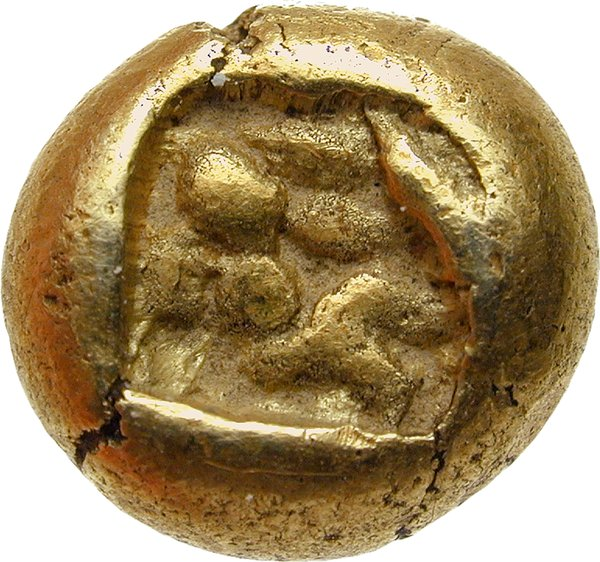

Guía de Numismática
CONCEPTO DE NUMISMATICA
La Numismática es la afición, el arte y la ciencia del estudio y coleccionismo de monedas y billetes de distintas épocas y culturas, ya sea por placer o por inversión.
La Numismática es toda una ciencia auxiliar de la historia ya que los motivos acuñados en las distintas épocas nos permiten conocer hechos históricos guerras, imperios, monarcas,
la evolución del arte de la arquitectura de las costumbres y unir así el pasado y el presente. Además de facilitar las transacciones comerciales sirven de propaganda al gobernante
aportándole prestigio.
Por otro lado dicho concepto ha ido evolucionando a lo largo de los años, en dos tipos de estudios numismaticos:
Clásica: ciencia auxiliar de la arqueología dedicada al estudio de las monedas. El estudio que realiza esta ciencia le permite dar testimonio de la economía de
los pueblos, de su historia geográfica, política, religiosa, etc..
Moderna: es la encargada del estudio científico del dinero en todas sus formas.(monedas ,billetes, acciones, bonos,…)
CONCEPTO DE MONEDA.
Concepto de moneda
Es un pequeño disco metálico normalmente de oro, plata y cobre, aunque ocasionalmente se utilizasen otros metales, que ha adaptado su tamaño a las distintas épocas de la historia. Contiene un texto e imágenes y un valor dado inicialmente por el metal y peso utilizado, posteriormente el valor lo marca el estado, grabándolo en la propia moneda.
Origen de la moneda
Los orígenes de la moneda como forma de pago se remontan a la antigua Grecia en el siglo VII antes de Cristo. Existen varias teorías sobre quien fue el primer emisor de moneda. Una de ellas, quizás la más probable sea aquella que asegura que las monedas fueron emitidas por banqueros y comerciantes establecidos en ciudades costeras de la Jonia meridional.
Catalogación según conservación
MonedasHay que tener en cuenta que esta clasificación está sujeta a cambios de valoración según las circunstancias históricas en torno a la acuñación de las monedas (y otros efectos de función similar).
De este modo encontramos monedas muy maltratadas o bien con defectos de fabricación que por ser escasas o incluso, gracias a esos defectos, consiguen un valor mucho mayor.
- Sin circular (S/C): piezas que no han tenido mucha circulación en el mercado, pero han sido destinadas para ello. No tienen defectos.
- Excelente buena conservación (EBC): no tiene imperfecciones apreciables a simple vista, pero contiene las huellas propias de una breve circulación y algunos pequeños golpes.
- Muy buena conservación (MBC): buena conservación, pero ha estado claramente en curso y tiene más golpes y hasta rayones.
- Buena conservación (BC): su valor numismático llega a ser la mitad de la MBC. La circulación y las imperfecciones son evidentes y marcadas.
- Regular conservación (RC): tiene arañazos, abolladuras, relieves desgastados y otros desperfectos de esta índole.
- Mala conservación (MC): sus leyendas y dibujos son ilegibles o prácticamente ilegibles. El metal ya no brilla y las imperfecciones son grandes: grietas, abolladuras grandes, erosión del canto, partes rotas u oxidadas etc.
En cualquier variante (billete, pagaré, letra de cambio, cheque, cédula)
- Sin Circular (S/C): Pieza nueva que no ha circulado y cuya conservación es perfecta.
- Excelentemente bien conservado (EBC): Muy escasa circulación. Estado de conservación excelente.
- Muy bien conservado (MBC): La circulación es patente en pequeños pliegues y suciedades, pero no existen desgarros ni otras imperfecciones mayores.
- Bien conservado (BC): Huellas evidentes de circulación, como suciedades, pérdida de color y pequeños desgarros.
- Regularmente conservado (RC): Falta hasta 1/8 de la superficie original del billete. Presencia de desgarros, suciedad y agujeros.
- Mala conservación (MC): Ilegibilidad de leyendas y mutilaciones graves.